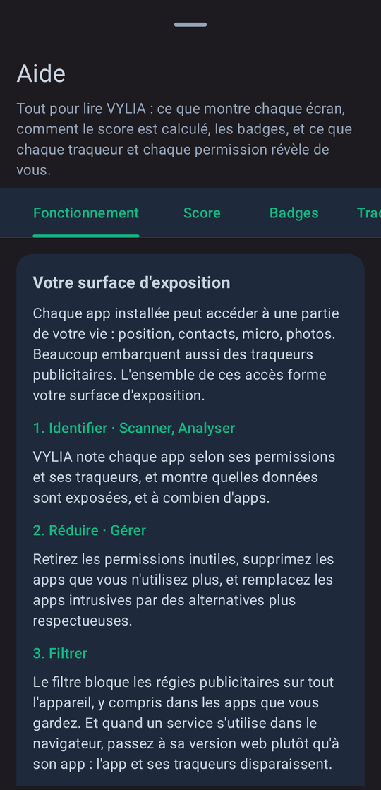
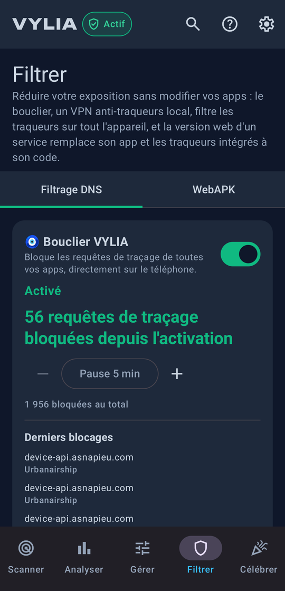
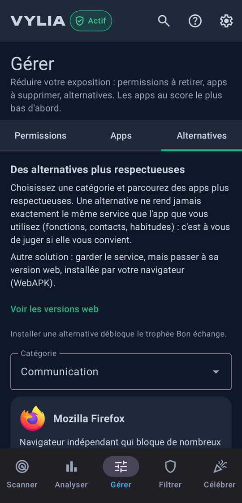
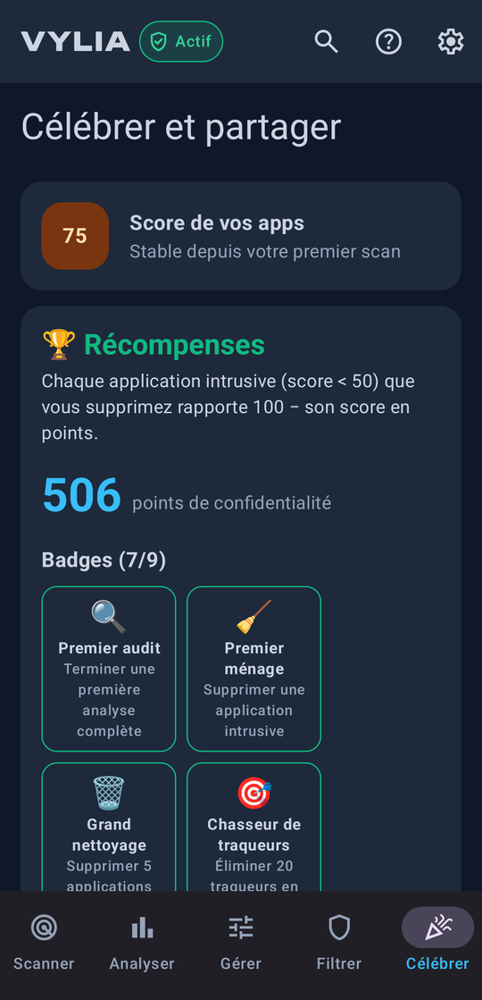

VYLIAScore, reduce and filter what your apps know about you
VYLIA gives every Android app a score from 0 to 100 based on the permissions it asks for and the trackers it ships, explains why, and helps you take back control. Everything is computed on your phone.
Download the APK Android 8.0 and later · English and French
The Yuka of privacy
Just as you scan a product at the supermarket to see what it contains, VYLIA scans your apps to see what they do with your data. Each one gets a score from 0 to 100 and a grade from A to E, readable at a glance. It starts at 100 and loses points for its permissions (50 at most), judged by what the app is for, and for its trackers (60 at most). Every point taken off is explained, without jargon.
- A
- Few or no sensitive permissions, and they serve the app's purpose; no trackers, or almost none.
- B
- A few tolerated permissions or a small number of trackers, often analytics.
- C
- Permissions unrelated to the app's purpose, or several trackers including advertising ones. Keep an eye on it.
- D
- Many advertising or profiling trackers, often with intrusive permissions. Look for an alternative.
- E
- Massive data collection. Replace it if you can.
- Version
- 0.9.0 (November 2026)
- System
- Android 8.0 and later
- Languages
- English, French
- Price
- free, no ads, no in-app purchases
- Account
- none
- Data collected
- none
- Trackers
- none
- Licence
- free software, GNU GPL v3
- Package
com.vylia.privacy- Size
- 4.4 MB
- Publisher
- Yogi Studio, France
Five screens, from findings to action
- Scan: each app's score and its grade from A to E. Permissions are judged by what the app is for: GPS costs nothing to a navigation app, it costs a lot to a game. Trackers are looked for in the app's code with the public Exodus Privacy database.
- Analyze: risk areas, the most widespread trackers, your score over time and an alert if your exposure goes up.
- Manage: permissions to revoke, apps you no longer open, more respectful alternatives sorted by category.
- Filter: the VYLIA shield blocks ad networks and trackers across the whole device, including in the apps you keep. Or switch to a service's web version, installed like an app: the app and its trackers go away.
- Celebrate: your progress, badges, and an image to share that never shows an app's name.




Screenshots of the French interface.
Spot what hides
VYLIA also flags known stalkerware, using the public database of the French non-profit Echap, targeted surveillance spyware such as Pegasus or Predator, using the public indicators of MVT (Amnesty International), and spying capabilities: a keyboard or accessibility service able to read what you type, a hidden icon with sensitive access, screen reading. VYLIA describes what an app can do, not what it actually does.
Install
Download the vylia-X.Y.Z.apk file from the
latest release and open it on your phone; Android
asks you to allow installs from that source. SHA-256 fingerprint of the signing certificate:
7f62c73f7ba255eb7de02e40beb22640fd8e9c6f22375d3663d70f6271516c89
A question, an idea: yogistudiofr@gmail.com.